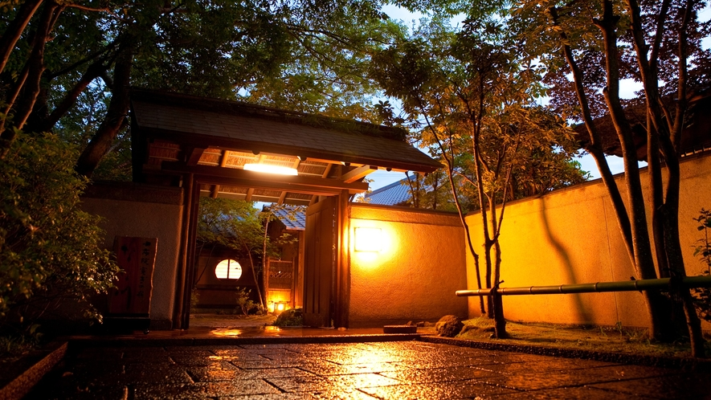
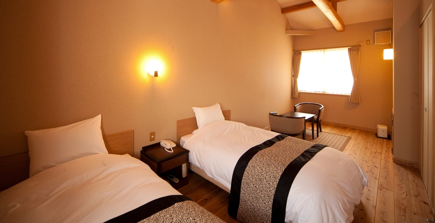
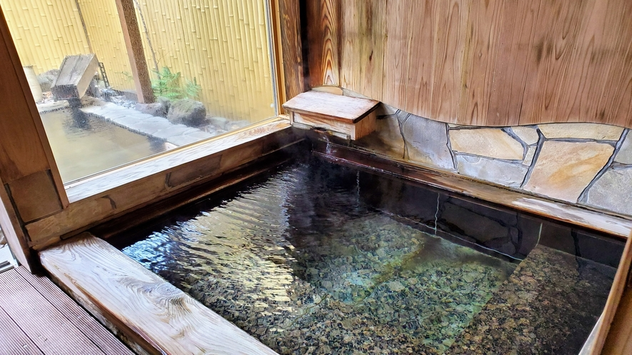
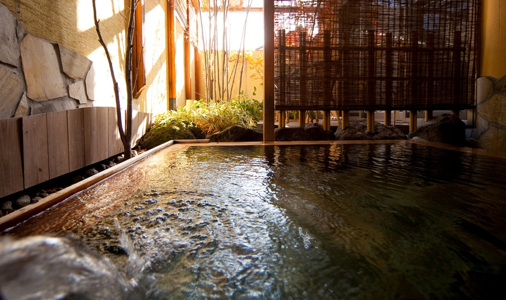

50㎡ 복층 화양실, 객실 전용 실내탕과 노천탕. 2/21 잔여 4, 2/22와 2/23 각 2로 두 기준 일정 3실 연박 부족. 2/28과 3/1은 각 3·4실로 표시.
사진을 누르면 원본 크기로 볼 수 있어요. 객실과 공용 시설은 사진 설명을 확인해 주세요.




판매처 사진 전체 보기
토요일 출발 · 공실 조회 2인 1실 2박 표시가 · 205,000엔부터
일요일 출발 · 공실 조회 2인 1실 2박 표시가 · 182,800엔부터
6인 여행 총액은 왕복 항공, 하카타 1박, 료칸 2박을 합한 금액입니다. 2026.11.10 조회 기준.